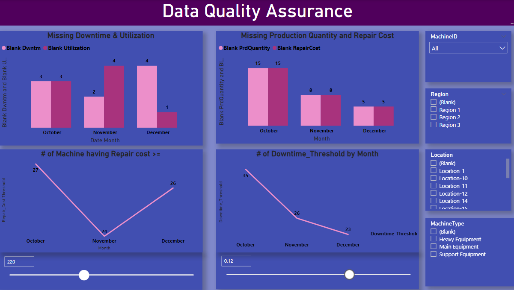

Data Quality Analytics
(Project on Power BI)
The project is for a manufacturing company.They have different
equipment which are called missions.They have different KPI's to
analyse for those machines.They have some issues while filling the data
so that company wanted to know about the issues to further rectify them.

The first two charts shows the count of blank entries into the data that were missed while feeding the information into the database. The other two visuals work along with changing values defines in the moving slicer through parameter.All the other values.All the data blending and transformation are done in power Bi only.